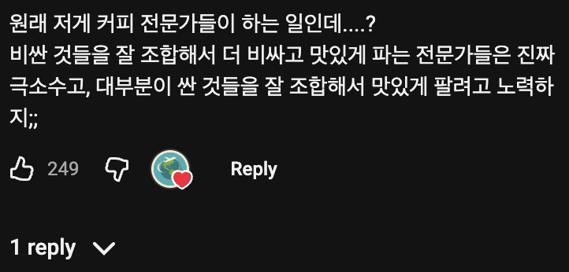

와 제임스 호프만
갑자기 의사는 왜...
권위는 도전을 부른다
제품의 품질을 판단하는 전문가의 전문성이 의심되는거지
내가 노력하는 것 보다
남의 노력을 깎아 내는게 다 쉬우니깐
의사는 환자 말을 듣고 진단해야 하는데 그거랑 비교를 하냐 바본가
실제로도 의사인척 꾸며서 다른 의사들이랑 소통하다가 국경없는 의사회 초청되서 외국가서 수술하고 온 사기꾼도 있지 않았었나. 심지어 수술 실력도 좋았다고..
근데 연주하는거 몰카보면 교수들이 학생들 심사하다가 프로가 나오면 첫음만 듣고 바로 알아보던데 이런걸 원하는거지
전문가가 진짜 전문가다운거
커피 전문가는 다르구나
스벅이랑 엔제리너스에서 파는 그 거품커피 아닌가?
자판기 커피 가지고 찬양하다 맛알못으로 쪽 당하는 전문가 영상 뭐 그런건줄 알았는데... 그냥 살린거네.
그냥 품질 개선을 위해 노력한 청년인 거 같은데
맛있게 만들었으니 고급 커피지 이제
이건 개잘한거 아닌가..?
고급 기법이잖아... 질소커피..
뭐가달라짐?
맛있어진대
나도 질속커피 좋아해
보통 크기 머그잔에 아무 커피믹스 2개를 먼저 붓고 더해서 찬우유를 머그컵 반 조금 넘게 까지 붓고 전자렌지에 1분45초정도 돌린후 휘핑기로 거품내면서 잘 저어주면 커피전문점 싸다구 날리는 맛도리 라떼 완성. 우유 덥히기와 휘핑기가 핵심임
내가 집에서 커피 맛있게 먹기 많이 시도 했는데 이 레시피 만든이후 라떼류는 안사먹음
원래 저렴한 식재료를 맛있게 만드는게 요리사 실력인것처럼 커피 전문가도 싸구려 커피로 맛을 끌어올리는게 실력인거지 ㅋㅋ
저렴한 식재료도 사실은 맛있어서 대량공급이 이뤄진 찐또배기들이긴 하지
레시피만 딸깍하는게 요리사가아니라 재료활용을 기가막히게하고 항상같은맛나오게함ㄹㅇ
손봐서 진짜 맛있어진건데 ㅋㅋㅋㅋㅋ
맛이 약하고 쓰다고 했는데 질소로 폼 만들어 주니까 공깃방울로 공간이 생겨서 쓴맛 덮어주고 질소커피 특유의 크리미한 질감으로 맛도 커버친거 아닌가.
예전에 이디야에서 질소커피 팔때 맛있어서 맨날 사먹으러 갔던 기억나네... 이디야 커피 별로 안좋아했는데도 질소커피 해놓으니까 맛있더라고.
질소커피는 향이 어떻게달라? 저게 포밍이 되나보네 좀 점도가 있어야 휘핑이될거같은데
질소 들어가서 거품이 생기니까 전체적으로 부드러워짐. 싸구려커피들 특징이 향이 존나 둔탁하고 찌르는듯한 맛 나는게 문젠데 질소로 거품내면 그게 부드러워질테니까 훨씬 먹기 좋아지겠지.
휘핑을 하는게 아니라 뭔 소다 만들듯이 질소를 커피에 녹이는거더라고.
https://m.blog.naver.com/ful7/221607421788
요거보면 뭔지 대충 보일꺼임.
근데 이젠 법으로 질소캡슐 금지되서 저거 못쓰게됐을거임..
자판기 커피 맛있게 살린거잖아..
쟤네들 우리나라 커피스틱 맛보면 정체성 혼란 올듯 ㅋㅋ
커피를 타겟으로 잡은게 실수인듯 그냥 성실하게 개선한 청년 된거잖아ㅋㅋ
'사람들은 음식을 먹는 게 아니라 정보를 먹는 거다!'
빡빡이 연전연승
맛있게 만든 거잖아 ㅋㅋㅋ